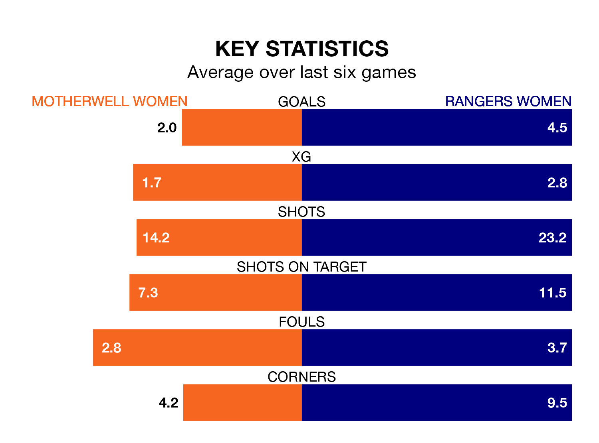

Rangers Women visit Motherwell Women at K Park Training Academy on Sunday on the back of 10 consecutive wins in SWPL 1.
It means Rangers have picked up the maximum 30 points from their last 10 games, and they face a Motherwell side who lost their last match, and have collected seven points from the last possible 30.
Rangers are top of the table after 14 games, of which they have won 13 and drawn one, earning 40 points.
Motherwell are seven places behind the away side in eighth, with four wins and one draw putting them on 13 points.
With 66 goals in 14 games so far this season, Rangers are the league's second-highest scorers with 4.7 goals per game. And they are conceding fewer than average, letting in eight goals at a rate of 0.6 per game.
The hosts, meanwhile, are below average scorers, with 1.7 goals per game, compared to a league average of 2.2. They have conceded 2.5 goals per game.
In Rio Hardy, Rangers have the league's sharpest shooter so far this season. She has notched 17 goals in 14 appearances.
Her goal rate of one every 72 minutes is quicker than that of Carla Boyce, Motherwell's top scorer with a goal every 126 minutes, and a total of seven goals in 14 games.
Over the last two years, Motherwell and Rangers have played each other on six occasions. Rangers won all of them.
On average, Motherwell scored 0.3 goals and Rangers 3.8 in those matches.
Their last meeting was on September 13, when Rangers won 4-1 at home.
Motherwell's last match was on November 26, a 4-2 loss against Partick Thistle Women, with Boyce and Kayla Jardine getting the goals for Motherwell.
Rangers beat Montrose Women 7-0 last time out, also on November 26, with Kirsty Howat (two), Elizabeth Arnott, Hardy, Rachel Rowe, Sarah Ewens and Tessel Middag on the scoresheet.
